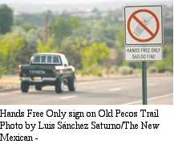

Recovered article. HTML body is from Common Crawl (text only); images came from the Sep 2022 iOS PDF:
Amateur Mobile Insurance.pdf ·
7 extracted images & links ·
7 of 7 images merged inline (aspect-ratio matched). Original src preserved on each
<img> as
data-original-src.
Contents: Basics; Coverage; Distraction Reactions;
Basics
Most rational thinking people buy insurance to cover just about every facet of their lives. Those who don't are in my opinion scofflaws, causing the rest of us to pay high premiums for uninsured motorists coverage. The logos shown are the registered Trademarks of just a few of the hundreds of different companies who write insurance policies (they are not an endorsement). From them, we buy life, health, vehicle, household, liability, umbrella, malpractice, and even pet insurance policies. Depending on your age, race, the city you live in, and a few dozen other demographic criteria,Americans spend up to 60% of their gross income on insurance. Quite obviously, the vast majority is spent on health insurance, however, up near the top of the list is vehicle insurance.
The average American pays over $1,000 per year to insure his/her vehicle to the minimum standards set by each state. If you are a high risk driver, or you travel in excess of 2,000 miles per month, you might be paying as much as $2,000 per year. Of course, higher-priced vehicles like BMWs, Mercedes, and Corvettes cost even more. All of this hard-earned cash may not even cover the cost of personal items left in the vehicle, much less amateur radio gear. There are a few things you can do to protect your equipment.
Insurance is a very competitive business, you don't get something for nothing, so don't be fooled by all the savings hype. All those wonderful savings come via a typical reduction in coverage! Usually, that's the level of liability coverage (maximum amount payable, which is not always a good thing!), and cutting out the less-apparent peripheral coverage—read that as your amateur radio equipment!
Very few drivers read their insurance policies to see what they cover, or more importantly what they don't cover! For example, most will not cover antennas which are not permanently attached. Read that as a mag mounted! Most cover theft to a specific limit, and most cover amateur radio equipment, if they're notified ahead of time—typically by writing. If there is a bottom line, don't assume any aspect of insurance coverage, even for your home station.
By the way, those plug-in data recorders, offered by automotive insurance companies as a means of reducing premiums, often cause more OBDII data corruption and driveability issues than RFI! In fact, General Motors recently issued a TSB (Technical Service Bulletin) covering this little-known issue. The TSB includes a myriad after-market devices including accelerometers, engine CPU programmers, and similar devices which plug into the OBDII data port.
Incidentally, the actual cost for one specific coverage clause—comprehensive glass replacement as an example—doesn't vary a whole lot between insurance carriers. Thus the only way for insurers to save you money, is to reduce coverage! Obviously, it literally pays to know everything about your coverage!
☜Return☜
Coverage
First, don't assume any item in or attached to your vehicle is covered. Some companies require notification in writing of the presence of ancillary equipment such as amateur radio gear. If you failed to notify them, and you have a loss, you may not be covered. Because this requirement varies between companies, don't assume any coverage unless you ask first!
 After-market insurance like the policies sold by the ARRL can be purchased to cover equipment regardless of where it is physically located. In this context, that's home, in your vehicle, motel room, what have you. While these policies are a simple way to insure amateur radio gear, it is less expensive to have a rider policy attached to your vehicle (or home) insurance policy. However, not all companies offer rider policies, and indeed they may not be necessary.
After-market insurance like the policies sold by the ARRL can be purchased to cover equipment regardless of where it is physically located. In this context, that's home, in your vehicle, motel room, what have you. While these policies are a simple way to insure amateur radio gear, it is less expensive to have a rider policy attached to your vehicle (or home) insurance policy. However, not all companies offer rider policies, and indeed they may not be necessary.
There is one caveat you should be aware of, and that is foreign travel. If you are going to take your radio equipment out of the country, very few insurance companies will cover any potential loss. This is especially true when traveling into Old Mexico! It is possible to purchase foreign travel coverage, but it is very expensive.
State Farm, the nations largest vehicle insurance company, is one that no longer offers rider policies. It is only necessary to notify them in writing of the presence of amateur radio gear installed in your car. In my personal case, I had to drive the vehicle to my agents place of business so they could inspect the installation. Their focus here was to make sure the gear was permanently installed (more on this in a moment).
 Again, it is important to remember that automobile insurance is a competitive business. No two insurance companies have the same ultimate coverage, although state and federal laws set the minimum coverage. The comprehensive coverage, basic costs, liability issues, the scope of coverage, and to some extent the state you reside in all affect your personal liability if you're involved in a crash or suffer a theft.
Again, it is important to remember that automobile insurance is a competitive business. No two insurance companies have the same ultimate coverage, although state and federal laws set the minimum coverage. The comprehensive coverage, basic costs, liability issues, the scope of coverage, and to some extent the state you reside in all affect your personal liability if you're involved in a crash or suffer a theft.
 With respect to coverage, the actual wording varies among insurance companies, but the common wording is as follows: Loss means, when used in this section, each direct and accidental loss of or damage to, your car, its equipment which is common to the use of your car as a vehicle, detachable living quarters attached or removed from your car for storage, or other items securely fixed in place as a permanent part of the body. You must have told us about the living quarters or other items before the loss and paid any extra premium required if any.
With respect to coverage, the actual wording varies among insurance companies, but the common wording is as follows: Loss means, when used in this section, each direct and accidental loss of or damage to, your car, its equipment which is common to the use of your car as a vehicle, detachable living quarters attached or removed from your car for storage, or other items securely fixed in place as a permanent part of the body. You must have told us about the living quarters or other items before the loss and paid any extra premium required if any.
 In case you missed it, the part which reads or other items securely fixed in place as a permanent part of the body is telltale to any amateur who uses a magnet mounted antenna, or a transceiver (or HT) which is not permanently attached therein. Should they become dislodged and strike anyone or anything, your insurance company may not cover the loss if any. In the case of State Farm, this coverage extends the liability portion of your policy as well. In other words, you may not have insurance protection if it isn't permanently attached to your vehicle. With today's litigation-prone atmosphere, that fact could be a financial disaster in the making.
In case you missed it, the part which reads or other items securely fixed in place as a permanent part of the body is telltale to any amateur who uses a magnet mounted antenna, or a transceiver (or HT) which is not permanently attached therein. Should they become dislodged and strike anyone or anything, your insurance company may not cover the loss if any. In the case of State Farm, this coverage extends the liability portion of your policy as well. In other words, you may not have insurance protection if it isn't permanently attached to your vehicle. With today's litigation-prone atmosphere, that fact could be a financial disaster in the making.
You may not have State Farm insurance or live in New Mexico, so your coverage may be different. In any case, if you operate mobile radio in any guise, call you insurance agent and make sure what your coverage includes, or doesn't include. And don't forget the advisement letter.
☜Return☜
Distraction Reactions

There is one aspect that isn't strictly amateur radio related, but close enough to mention, and that is mobile cellphone use. More and more communities are passing laws to prohibit non-handsfree operation. For example, Sante Fe, Albuquerque, and Taos, NM all have anti-cellphone ordinances on their books. Almost all entities have anti-texting laws. Fines vary from $60 to as much as $500. The trend is gaining ground all across the US, because texting is statically 7 times more deadly than drunk driving according to the NHTSA (National Highway Traffic Safety Administration).
Most cellphones have provisions for speakerphone and/or headset use built in, and users opt for some kind of dash mount to hold the cellphone in these cases. The biggest problem with most of them, the phones are not held securely as they rely on spring-loaded clips or magnets. In the event of a crash, the cellphone is free to move about the cabin.
As a result of these new laws, the lack of safe mounting methods, and the absolute fact that cellphones are the most prevalent distraction factor is vehicle crashes, insurance companies have begun writing new provisions into their policies against their use while underway. Some of these new provisions are so broad in their scope, amateur radio operation while underway could easily be included. It pays to be informed.
As an ARRL member, you should also know that they have a stated mobile policy, and one you should be aware of, in case your municipality attempts to enact unfair laws restricting mobile amateur radio operation. Click the link for more information.
☜Return☜
Home
{kind=link}